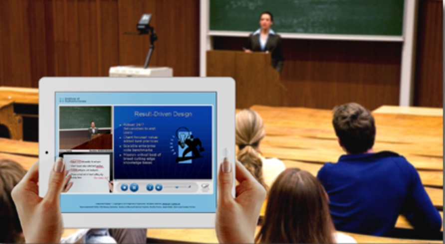
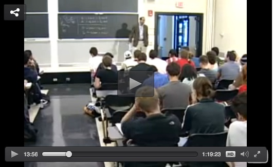
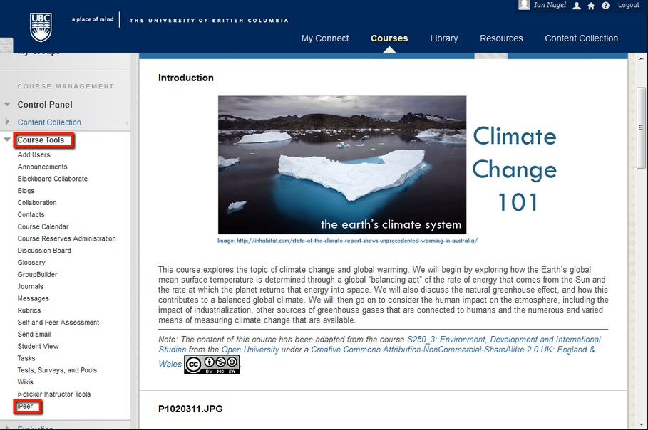

4.2 Vinho velho em garrafas novas: a aprendizagem on-line do tipo sala de aula



Começamos com os métodos de ensino em sala de aula que foram transferidos para um formato tecnológico com pouca alteração nos princípios gerais de design. Argumentarei que estes são essencialmente designs antigos em garrafas novas.
4.2.1 Vídeo transmitido ao vivo (streamed)
Trata-se basicamente de uma aula expositiva presencial transmitida no momento de sua realização para estudantes remotos (embora também possa haver estudantes presentes fisicamente no auditório). Os estudantes remotos podem estar assistindo individualmente em casa, no trabalho ou em trânsito, ou (mais frequentemente) em pequenos grupos em outro campus ou centro de aprendizagem local. Não há alteração no design de ensino, embora o instrutor precise certificar-se de que os estudantes remotos não sejam ignorados caso haja perguntas ou discussões. Para um exemplo, veja aqui.
Este costuma ser o primeiro passo que os instrutores dão em direção à aprendizagem on-line, pois não precisam fazer nada de novo além de aprender a configurar e ligar os equipamentos. À medida que a tecnologia se tornou mais barata e fácil de usar, o uso de aulas transmitidas ao vivo dobrou entre 2016 and 2017 no Canadá (Bates et al., 2018).
Alguns instrutores exigem que todos os estudantes estejam presentes durante a transmissão ao vivo para garantir a discussão, mas isso pode ser contraproducente se o objetivo de ir para o ambiente on-line for aumentar a flexibilidade para os estudantes. Isso pode ser contornado utilizando um fórum de discussão assíncrono on-line em um sistema de gestão de aprendizagem (para saber mais sobre isso, veja o Capítulo 4.4). Na maioria dos casos, contudo, os palestrantes preferem também gravar a transmissão ao vivo para que todos os estudantes possam acessar a aula a qualquer momento (veja a seção seguinte abaixo).
4.2.2 Aulas que utilizam captura de tela (lecture capture)
Esta tecnologia, que grava automaticamente uma aula presencial, foi originalmente projetada para aprimorar o modelo de sala de aula, disponibilizando as exposições para visualizações repetidas on-line a qualquer momento para os estudantes que frequentam as aulas regularmente — em outras palavras, uma forma de tarefa de casa ou revisão.



As salas de aula invertidas (flipped classrooms), que gravam previamente uma exposição para os estudantes assistirem individualmente, seguidas de discussão em sala de aula, são uma tentativa de explorar melhor esse potencial. A principal vantagem da captura de aulas é o aumento do acesso, especialmente se os estudantes têm longos trajetos de deslocamento ou precisam lidar com condições climáticas difíceis. Em alguns casos, isso pode reduzir drasticamente a evasão dos estudantes. Para um exemplo disso, veja aqui.
Um dos maiores impactos da captura de aulas ocorreu nos cursos on-line abertos e massivos baseados em instrução (xMOOCs), como os oferecidos pela Coursera, Udacity e edX. No entanto, mesmo esse tipo de MOOC é na verdade um modelo de design básico de sala de aula (os MOOCs são discutidos com mais detalhes no Capítulo 5). A principal diferença em um MOOC é que a sala de aula é aberta a qualquer pessoa — mas, em princípio, muitas aulas universitárias também o são — e os MOOCs estão disponíveis para um número ilimitado de pessoas a distância. Assim, se uma instituição decidisse disponibilizar todas as suas aulas gravadas em um servidor de acesso aberto ou no YouTube, elas se tornariam MOOCs. De qualquer forma, quer as captações de aulas estejam disponíveis apenas para estudantes matriculados em uma disciplina ou como um MOOC, o planejamento do ensino não mudou significativamente, embora as aulas sejam cada vez mais gravadas em trechos menores, em parte como resultado de pesquisas sobre MOOCs (para saber mais sobre essa pesquisa, consulte o Capítulo 8.4).
4.2.2 Cursos que utilizam sistemas de gestão de aprendizagem
Os sistemas de gestão de aprendizagem (LMSs - Learning Management Systems) são softwares que permitem a professores e estudantes fazer login e trabalhar em um ambiente de aprendizagem on-line protegido por senha. A maioria dos sistemas de gestão de aprendizagem, como Blackboard, Desire2Learn e Moodle, é usada de fato para replicar um modelo de design de sala de aula. Eles possuem unidades ou módulos semanais, o professor seleciona e apresenta o material para todos os estudantes da turma ao mesmo tempo, uma turma com grande número de matriculados pode ser organizada em seções menores com seus próprios tutores, há oportunidades para discussão (on-line), os estudantes trabalham os materiais aproximadamente no mesmo ritmo e a avaliação é feita por meio de testes ou redações de fim de curso.



As principais diferenças de design são que o conteúdo é predominantemente baseado em texto e não oral (embora, cada vez mais, áudio e vídeo estejam integrados aos LMSs), a discussão on-line é principalmente assíncrona em vez de síncrona, e o conteúdo do curso fica disponível a qualquer hora e em qualquer lugar com conexão à internet. Estas são diferenças importantes em relação a uma sala de aula física, e professores e instrutores experientes podem modificar ou adaptar os LMSs para atender a diferentes requisitos de ensino ou aprendizagem (como também podem fazer nas salas de aula físicas), mas a estrutura básica de organização do LMS continua a mesma de uma sala de aula física.
Ainda assim, o LMS representa um avanço em relação aos designs on-line que apenas disponibilizam aulas na internet como vídeos pré-gravados ou carregam cópias em PDF de notas de slides de Powerpoint, como infelizmente ainda ocorre em muitos programas on-line. Há também flexibilidade suficiente no design dos sistemas de gestão de aprendizagem para que sejam usados de formas que rompam com o modelo tradicional de sala de aula, o que é importante, pois um bom design on-line deve levar em conta os requisitos especiais dos aprendizes on-line, exigindo que o planejamento seja diferente do modelo de sala de aula.
4.2.3 As limitações do modelo de design de sala de aula para a aprendizagem on-line
Vinho velho ainda pode ser um bom vinho, quer a garrafa seja nova ou não. O que importa é se o design de sala de aula atende às necessidades em constante mudança de uma era digital. No entanto, apenas adicionar tecnologia à mistura, ou disponibilizar o mesmo design on-line, não resulta automaticamente no atendimento às necessidades em mudança.
É importante, portanto, buscar um design que tire o máximo proveito das potencialidades educacionais das novas tecnologias, porque, a menos que o design mude significativamente para aproveitar plenamente o potencial da tecnologia, o resultado provavelmente será inferior ao do modelo de sala de aula física que ele tenta imitar. Assim, mesmo que a nova tecnologia, como a captura de aulas e as questões de múltipla escolha baseadas em computador organizadas em um MOOC, ajude mais estudantes a memorizarem melhor ou a aprenderem mais conteúdo, por exemplo, isso pode não ser suficiente para atender às competências de nível mais alto necessárias na era digital.
O segundo perigo de apenas adicionar novas tecnologias ao design de sala de aula é que podemos estar apenas aumentando os custos, tanto em termos de tecnologia quanto do tempo dos instrutores, sem alterar os resultados obtidos.
O motivo mais importante, contudo, é que os estudantes que estudam on-line encontram-se em um ambiente ou contexto de aprendizagem diferente dos estudantes que aprendem em uma sala de aula física, e o design de ensino precisa levar isso em consideração. Isso será discutido de forma mais completa no restante do livro.
A educação não é exceção ao fenômeno das novas tecnologias serem usadas, a princípio, apenas para reproduzir modelos de design anteriores, antes de encontrarem seu potencial único. No entanto, são necessárias alterações no modelo de design básico para que as exigências da era digital e todo o potencial das novas tecnologias sejam explorados na educação.
Referências
Bates, A. et al. (2018) Tracking Online and Distance Education in Canadian Universities and Colleges: 2018 Halifax NS: Canadian Digital Learning Research Association
Atividade 4.2 Migrando o modelo de sala de aula para o ambiente on-line
1. Você concorda que o modelo de design de sala de aula é um produto do século XIX e precisa ser alterado para o ensino na era digital? Ou ainda existe flexibilidade suficiente no modelo de sala de aula para a nossa época?
2. Você concorda que as disciplinas que utilizam LMSs são basicamente um modelo de sala de aula entregue de forma on-line, ou constituem um modelo de design exclusivo por si mesmas? Se sim, o que as torna únicas?
3. Quais são as vantagens e desvantagens de dividir uma aula expositiva de 50 minutos em, por exemplo, cinco trechos de 10 minutos para gravação? Você chamaria isso de uma mudança de design significativa? Se sim, o que a torna significativa?
Para minhas opiniões pessoais sobre estas três questões, ouça o podcast abaixo:
Um elemento de áudio foi excluído desta versão do texto. Você pode ouvi-lo on-line aqui: https://pressbooks.bccampus.ca/teachinginadigitalagev2/?p=118